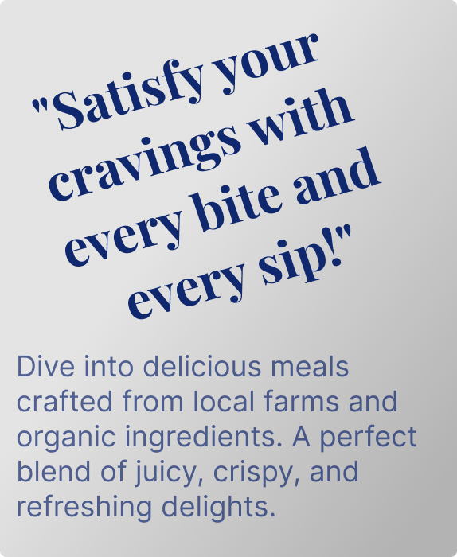
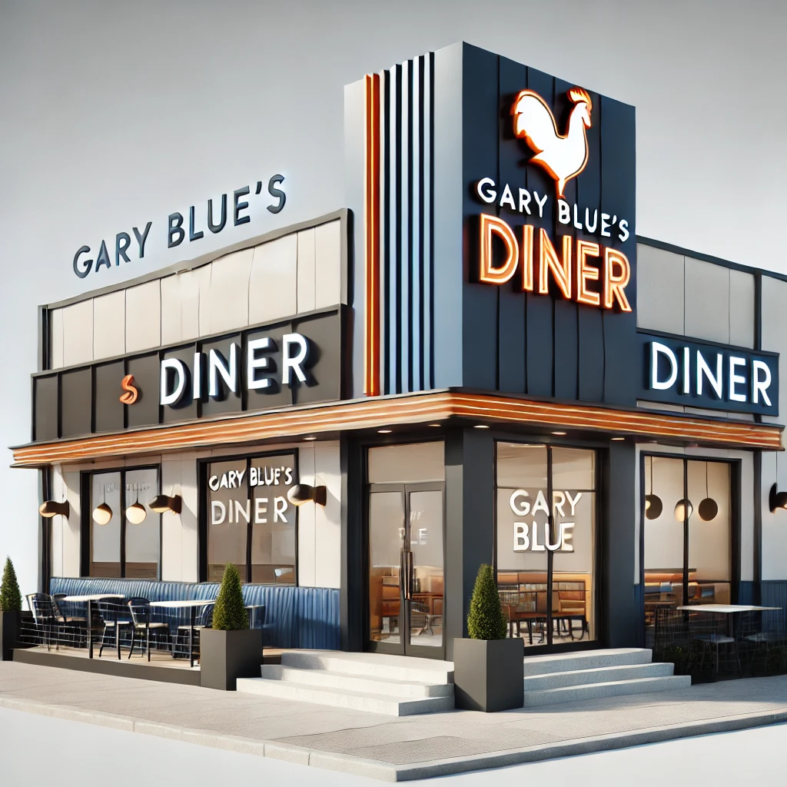

Welcome to Gary Blue’s Diner –
A Classic Twist on Comfort!
At Gary Blue’s Diner, we bring together a nostalgic atmosphere with delicious, hearty meals inspired by the iconic diners of the 1950s. Step into our cozy chrome-and-neon haven, where red leather booths, checkered floors, and a rockin’ jukebox take you back in time. We pride ourselves on serving fresh, quality ingredients with a smile, making every visit to Gary Blue’s Diner special!
Contact us at:
320 Topsail Road, St. John's, NL A1A 5K8, Canada
garybluesdiner@gmail.com
+17096332323